Eigene Analysatoren
Ein eigener Analysator ist ein kurzes Programm in JavaScript. Er liest die Grammatikanalyse eines Dokuments und sucht darin nach den Textstellen, die Sie interessieren. Sie schreiben das Skript unter Fenster ▸ Analysatoren, und LemmaLoom führt es bei der Indizierung der Dokumente in den gewählten Sprachen aus, in allen Ihren Projekten. Was Ihr Analysator findet, wird zusammen mit den Dokumenten gespeichert. Anschließend können Sie diese Befunde über die Lens des Analysators ansehen, automatisch kodieren und in Abfragen zählen oder vergleichen.
Analysatoren sind für Fragen gedacht, die von der Grammatik abhängen und die die eingebauten Lenses nicht in der Form beantworten, die Sie brauchen. Eine einzelne Frage lässt sich mit einer Abfrage schneller beantworten (siehe Kapitel 15, Eine Abfrage erstellen); ein Analysator lohnt sich in der Regel dann, wenn Sie in Ihren Dokumenten (den vorhandenen wie den später importierten) immer wieder nach demselben Muster suchen und es sowohl in der Leseansicht annotiert sehen als auch zählen möchten.
Dieses Kapitel verwendet das Beispielprojekt „Klimadebatte“, das Sie mit Ablage ▸ Importieren ▸ Beispielprojekt importieren (siehe Das Beispielprojekt in Kapitel 1, Einführung). Genauer gesagt geht es darum, ob Klima als grammatisches Subjekt eines Satzes vorkommt, wie in Das Klima hat derweil nicht auf uns gewartet, oder als Objekt, wie in das Klima schützen. Ein Wörterbuch findet jedes Vorkommen des Wortes Klima, gleich in welchem Zusammenhang; ein Analysator unterscheidet dagegen Subjekte und Objekte anhand der Funktionen, die in der Grammatikanalyse verzeichnet sind. Der Beispielanalysator „Klimarollen“ annotiert jedes Klima, das als Subjekt dient, in einer Farbe und jedes Klima, das Objekt ist, in einer anderen. Wie Sie genau diesen Analysator selbst schreiben, beschreibt Ein erster Analysator ausführlich.
Analysatoren sind der einzige Teil von LemmaLoom, für den Sie programmieren können müssen. Die Skripte sind zwar recht kurz und einfach, sie verwenden aber Variablen, Listen, Schleifen, if-Anweisungen und anonyme Funktionen in der Schreibweise mit =>. Wenn Sie noch nie ein Programm geschrieben haben, führt Sie der kostenlose JavaScript-Kurs der MDN Web Docs in die Grundlagen ein. Wenn Sie nicht programmieren möchten, erstellen Sie eine Abfrage, die die gewünschten Daten findet, und wandeln diese Abfrage in einen Analysator um; das Skript entsteht dabei automatisch (siehe Eine Abfrage in einen Analysator umwandeln in Kapitel 18, Abfrageergebnisse nutzen). Die erzeugten Skripte eignen sich auch gut als Beispiele zum Lernen.
Wichtige Begriffe
Ein Analysator ist in LemmaLoom ein Programm, das bei der Indizierung läuft und dem Dokument Befunde hinzufügt. (Näheres zur Indizierung in LemmaLoom finden Sie in Kapitel 21, Analyse und Indizierung.) LemmaLoom bringt drei Analysatoren mit, nämlich Kohäsion, Metadiskurs und Rhetorik. Einen eigenen Analysator schreiben Sie entweder selbst, oder LemmaLoom erzeugt ihn automatisch aus Ihrer Abfrage. Jeder eigene Analysator gehört zu Ihrer Bibliothek und wirkt daher auf die Dokumente aller Projekte.
Das Skript ist in JavaScript geschrieben und muss eine Funktion namens analyze enthalten. LemmaLoom ruft diese Funktion mit der Analyse Ihres Dokuments auf, und Ihr Analysator muss die Befunde an LemmaLoom zurückgeben.
Das Dokumentobjekt ist das JavaScript-Objekt, das Ihrer Funktion übergeben wird (Objekt hier im Sinne der Programmierung, also ein Bündel benannter Felder wie text und lemma). Seine Felder stehen für verschiedene Eigenschaften des Dokuments, darunter die Sprache, die Sätze mit ihren Tokens, Phrasen und Nominalgruppen sowie die Ergebnisse der eingebauten Analysatoren.
Tokens sind einzelne Wortformen und Satzzeichen. Zu jedem Token gehören seine Grundform oder sein Lemma, das Wortart-Tag, seine Dependenzrelation zu dem Wort, von dem es abhängt (seinem Kopf), und gegebenenfalls morphologische Merkmale wie Numerus und Tempus.
Ein Befund ist eine Textstelle, die der Analysator meldet, also eine Folge benachbarter Tokens in einem Satz zusammen mit ihrem Schlüssel.
Schlüssel bezeichnen die Arten von Befunden, etwa subject, object und so weiter. Die Legende fasst Ihre Schlüssel zusammen, jeden mit der Beschriftung, der Farbe und dem Stil, mit denen er dargestellt wird. Aus ihr entsteht die Legende der Lens Ihres Analysators.
| Ort | Was Sie mit einem eigenen Analysator tun können |
|---|---|
| Fenster ▸ Analysatoren | Analysatoren schreiben, testen, sichern, ändern und löschen |
| Dialog Dokument importieren und Dokumenteigenschaften | Festlegen, ob ein Analysator auf einem Dokument läuft; ihn erneut ausführen oder seine Ausgabe entfernen |
| Lens-Menü der Leseansicht | Die Befunde im geöffneten Dokument annotieren |
| Dokument ▸ Automatisch kodieren… | Die Befunde kodieren |
| Abfragen | Analyse · Befunde suchen, in Regeln prüfen, zählen und vergleichen |
Das Fenster „Analysatoren“
Wählen Sie Fenster ▸ Analysatoren, um das Fenster zu öffnen. Es ist in drei Spalten aufgeteilt.
- Die erste Spalte links ist die alphabetisch sortierte Liste Ihrer Analysatoren. Jede Zeile nennt die Sprachen, in denen der Analysator läuft, etwa
de en. Mit der Schaltfläche Analysator hinzufügen darunter legen Sie einen neuen Analysator an. - Die zweite Spalte zeigt den ausgewählten Analysator. Oben stehen Name, die Markierungsfelder für die Sprachen Englisch, Deutsch und Chinesisch sowie die Schaltfläche Sichern. Darauf folgen die Legende, der Skripteditor und Ausprobieren, wo Sie den Analysator an einigen Sätzen testen.
- Die dritte Spalte schließlich enthält den Bereich Referenz mit der Liste der Hilfsfunktionen, der benannten Konstanten und der Bestandteile des Dokumentobjekts.
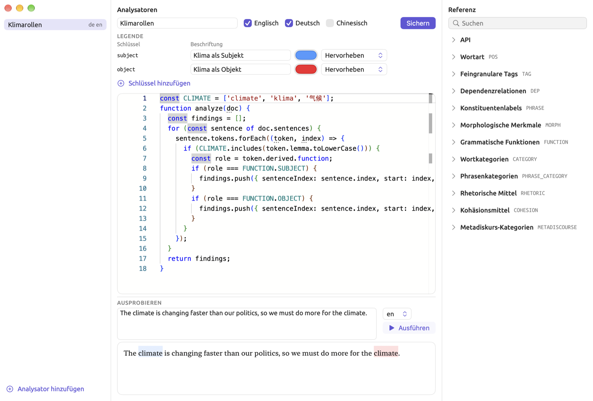
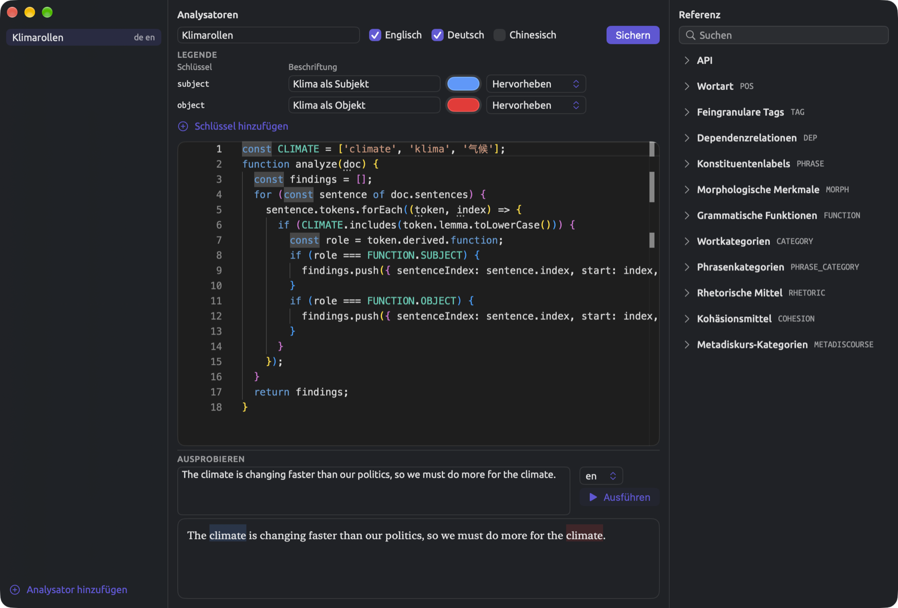
Beim Öffnen des Fensters zeigt die mittlere Spalte einen neuen, noch nicht gesicherten Analysator, dessen Beispielskript jedes Substantiv findet. Um einen vorhandenen Analysator zu ändern, klicken Sie ihn in der Liste links an. Anfangs nimmt der Bereich Ausprobieren unten in der Spalte nur wenig Höhe ein; ziehen Sie die Trennlinie nach oben, um ihn beim Testen zu vergrößern. LemmaLoom merkt sich die Höhe auch über einen Neustart hinweg.
Während Sie schreiben, nummeriert der Editor die Zeilen, färbt die Bestandteile des Skripts ein und schlägt Namen vor. Nach POS. bietet das Vorschlagsfenster alle Wortarten an, nach LL. entsprechend die Hilfsfunktionen. Manche Fehler unterstreicht der Editor schon während der Eingabe, zum Beispiel den Verweis auf eine Konstante, die nicht definiert ist. Um einen Haltepunkt in das Skript zu setzen, klicken Sie in den linken Rand neben der gewünschten Zeilennummer (siehe Haltepunkte und schrittweise Ausführung weiter unten in diesem Kapitel).
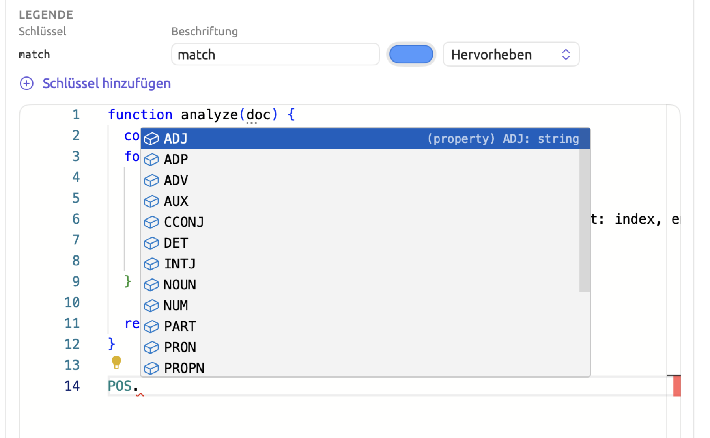
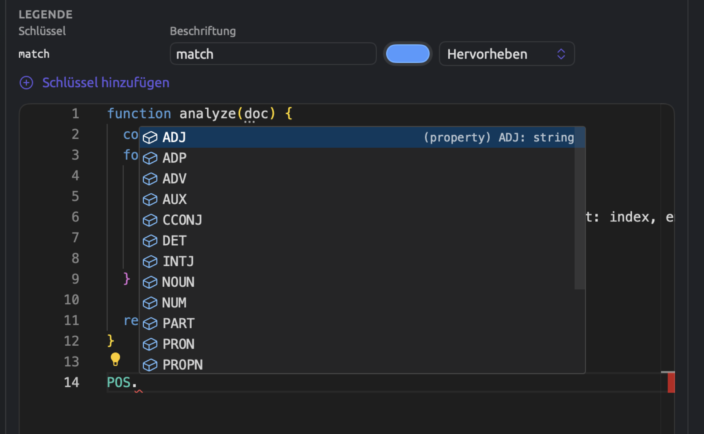
Ein erster Analysator
Der Analysator „Klimarollen“ hat nur zwei Schlüssel, subject und object. Welchen Schlüssel ein Klima erhält, hängt davon ab, ob das Wort im Satz als Subjekt oder als Objekt dient. Das vollständige Skript sieht so aus:
const CLIMATE = ['climate', 'klima', '气候'];
function analyze(doc) {
const findings = [];
for (const sentence of doc.sentences) {
sentence.tokens.forEach((token, index) => {
if (CLIMATE.includes(token.lemma.toLowerCase())) {
const role = token.derived.function;
if (role === FUNCTION.SUBJECT) {
findings.push({ sentenceIndex: sentence.index, start: index, end: index + 1, key: 'subject' });
}
if (role === FUNCTION.OBJECT) {
findings.push({ sentenceIndex: sentence.index, start: index, end: index + 1, key: 'object' });
}
}
});
}
return findings;
}
Die meisten Dokumente in „Klimadebatte“ sind auf Deutsch geschrieben, „Uns läuft die Zeit davon (Englisch)“ dagegen auf Englisch; „Klimarollen“ läuft deshalb in beiden Sprachen. Seine Legende nennt die beiden Schlüssel „Klima als Subjekt“ und „Klima als Objekt“.
So legen Sie einen Analysator an:
- Wählen Sie Fenster ▸ Analysatoren. Zeigt die mittlere Spalte einen Analysator, den Sie bereits gesichert haben, klicken Sie unter der Liste auf Analysator hinzufügen.
- Geben Sie in Name einen Namen ein.
- Wählen Sie die Sprachen der Dokumente aus, auf denen der Analysator laufen soll. Anfangs ist Englisch ausgewählt.
- Klicken Sie in den Editor, wählen Sie mit ⌘A das Beispielskript aus, und tippen oder setzen Sie Ihr Skript an seiner Stelle ein.
- Geben Sie jedem Schlüssel in der Legende eine Beschriftung; dort listet LemmaLoom die Schlüssel auf, die es im Skript gefunden hat (siehe Schlüssel und Legende weiter unten in diesem Kapitel).
- Testen Sie das Skript unter Ausprobieren (siehe Testen mit „Ausprobieren“ weiter unten in diesem Kapitel).
- Klicken Sie auf Sichern.
Ein guter Test für „Klimarollen“ ist ein Satz, der beide Verwendungen enthält, etwa der englische Satz The climate is changing faster than our politics, so we must do more for the climate (das Klima ändert sich schneller als unsere Politik, also müssen wir mehr für das Klima tun). Wenn Sie im Sprachmenü neben dem Testfeld en wählen, hebt Ausführen das erste climate in Blau als subject hervor und das zweite in Rot als object.
Nach dem Sichern erscheint der neue Analysator in der Liste, und LemmaLoom beginnt automatisch, ihn im Hintergrund auf Ihren Dokumenten in den ausgewählten Sprachen auszuführen. Im Lens-Menü jedes Dokuments in diesen Sprachen steht der Analysator sofort zur Verfügung, und seine Annotationen erscheinen, sobald er auf dem Dokument gelaufen ist.
Das Skript lesen
Wenn Sie mit JavaScript vertraut sind, können Sie direkt zum Abschnitt Das Dokument, das ein Analysator erhält weiter unten springen. Die Zeilenangaben folgen der Nummerierung, die der Editor nach dem Einsetzen des Skripts zeigt.
Zeile 1 (const CLIMATE = …) legt fest, welche Lemmata als Klima zählen. const gibt einem Wert einen Namen, und eckige Klammern definieren ein Array. Das englische climates hat das Lemma climate, das deutsche Klimas, wie in des Klimas, das Lemma Klima. Das Array enthält das Wort auf Englisch, Deutsch und Chinesisch. Das deutsche Wort steht hier kleingeschrieben (klima), weil Zeile 6 jedes Lemma vor dem Abgleich in Kleinbuchstaben umwandelt.
Zeile 2 (function analyze(doc) {) definiert die Funktion, die LemmaLoom aufruft, mit einem Argument namens doc. Dieses Argument ist das Dokumentobjekt, das LemmaLoom übergibt. Zeile 3 (const findings = []) deklariert eine Array-Variable findings, die die Befunde aufnimmt.
In Zeile 4 (for (const sentence of doc.sentences) {) durchläuft das Skript jeden Satz des Dokuments und führt für jeden die Anweisungen in diesem Block aus. Ebenso durchläuft es in Zeile 5 (sentence.tokens.forEach(…)) die Tokens des aktuellen Satzes. (token, index) => { … } ist eine anonyme Funktion; forEach ruft sie bei jedem Durchlauf einmal auf und übergibt ihr das aktuelle Token und seine Position im Satz, gezählt ab 0.
Ist die Bedingung in Zeile 6 (if (CLIMATE.includes(…)) {) erfüllt, das heißt, findet includes das Lemma des Tokens in der Liste CLIMATE, werden die Anweisungen in den geschweiften Klammern dieses if ausgeführt.
Zeile 7 (const role = token.derived.function;) liest die grammatische Funktion des aktuellen Tokens, denselben Wert, den die Lens Grammatische Funktion zeigt. Die Zeilen 8 (role === FUNCTION.SUBJECT) und 11 (role === FUNCTION.OBJECT) prüfen mit === auf Gleichheit. Dieser Vergleichsoperator ergibt true, wenn beide Operanden gleich sind. Hier prüft das Skript, ob die grammatische Funktion des Tokens FUNCTION.SUBJECT oder FUNCTION.OBJECT ist (siehe Konstanten weiter unten in diesem Kapitel).
Trifft der Vergleich zu, hängt das Skript in den Zeilen 9 und 12 (findings.push(…)) ein Objekt, das einen Befund darstellt, an das Array findings an; ein Objekt steht in geschweiften Klammern. Jedes dieser Objekte hat vier Eigenschaften, nämlich den Satz, aus dem der Befund stammt, die Anfangsposition der Textstelle (start, also der index des aktuellen Tokens), die Position direkt nach ihrem letzten Token (end, hier index + 1) und den Schlüssel. Jeder Befund umfasst deshalb genau ein Wort, und seine Anfangs- und Endposition folgen direkt aufeinander.
In Zeile 17 (return findings;) gibt das Skript die Ergebnisse schließlich an LemmaLoom zurück.
Objekt ist eine weit gefasste Kategorie der grammatischen Funktionen und umfasst auch das Objekt einer Präposition. Im Englischen zählt das Skript deshalb Fälle wie do more for the climate ebenso wie protect the climate. Subjekte von Passivsätzen wie the climate is affected by our emissions fallen unter die grammatische Funktion FUNCTION.SUBJECT und werden daher als Subjekte gezählt. Wenn Sie Passivsubjekte zu den Objekten zählen möchten, ändern Sie Zeile 7 in const role = token.dep === DEP.NSUBJPASS ? FUNCTION.OBJECT : token.derived.function;. Mit ? und : wählt die Zeile zwischen FUNCTION.OBJECT und der eigenen Funktion des Tokens, je nachdem, ob das Token Subjekt eines Passivsatzes ist oder nicht. Diese Lösung gilt nur im Englischen vollständig; die deutsche Grammatikanalyse kennzeichnet Passivsubjekte genauso wie Subjekte im Aktiv, und die chinesische vergibt dieses Label nur an einige Subjekte von 被-Sätzen.
Auf dieselbe Weise kann das Skript die grammatischen Rollen jedes beliebigen Wortes verfolgen, etwa von Regierung oder Industrie. Ersetzen Sie dazu die Lemmata in Zeile 1 durch Ihre Wörter in Kleinschreibung.
Das Dokument, das ein Analysator erhält
Die Funktion analyze erhält ein Argument, das im Folgenden doc heißt. Es enthält drei Felder:
| Feld | Inhalt |
|---|---|
doc.language | Die Sprache der Analyse, "en", "de" oder "zh" |
doc.sentences | Die Sätze in ihrer Reihenfolge |
doc.builtins | Die Ergebnisse der eingebauten Analysatoren Kohäsion, Metadiskurs und Rhetorik |
Ein Analysator kann nur Ergebnisse liefern, die auf der Analyse des Dokuments beruhen. Um seine Befunde mit Ihren Kodierungen, Memos, Verknüpfungen, Lesezeichen, Attributen, Dokumenteigenschaften oder den Ergebnissen anderer eigener Analysatoren zu kombinieren, erstellen Sie eine Abfrage (siehe Die Befunde verwenden weiter unten in diesem Kapitel).
Sehr große Dokumente indiziert LemmaLoom in Teilen von höchstens einem halben Megabyte Text (etwa 80.000 englische Wörter). LemmaLoom ruft analyze für jeden Teil einmal auf, und die Satznummerierung beginnt jedes Mal wieder bei 0. Dokumente üblicher Länge werden als ein einziger Teil indiziert.
Sätze
Die Einträge in doc.sentences haben diese Felder:
| Feld | Inhalt |
|---|---|
index | Die Nummer des Satzes, gezählt ab 0. Sie ist zugleich die Position des Satzes in doc.sentences. |
text | Der Text des Satzes |
tokens | Die Tokens des Satzes in ihrer Reihenfolge |
root | Die Position des Tokens, das die Wurzel des Satzes bildet, meist sein Hauptverb, oder -1, wenn für den Satz keine Analyse vorliegt |
constituents | Die Phrasen des Satzes (siehe Phrasen und Nominalgruppen) |
nounChunks | Die Nominalgruppen des Satzes |
Tokens
Die Tokens werden innerhalb jedes Satzes ab 0 nummeriert, und Positionen in Skripten beziehen sich auf diese Nummern. Ein Token ist entweder ein Wort oder ein Satzzeichen. Jedes Token hat diese Felder:
| Feld | Inhalt | Beispiel |
|---|---|---|
text | Das Token, wie es im Text steht | targets |
whitespace | Der Leerraum, der auf das Token folgt | " " |
lemma | Die Grundform; im Chinesischen dasselbe wie text | target |
pos | Die universelle Wortart, mit denselben Kürzeln in jeder Sprache | NOUN |
tag | Das feingranulare Tag aus dem Tagset der jeweiligen Sprache | NNS |
dep | Die Dependenzrelation zum Kopf des Tokens | nsubjpass |
head | Die Position des Kopfes; die Wurzel verweist auf sich selbst | 4 |
index | Die eigene Position des Tokens im Satz | 2 |
morph | Die morphologischen Merkmale; im Chinesischen leer | { Number: "Plur" } |
isStop | true bei sehr häufigen Wörtern wie der und von | false |
derived | Drei Kategorien, die LemmaLoom aus den obigen Feldern ableitet (siehe den nächsten Abschnitt) |
Die Beispiele in der Tabelle stammen aus dem englischen Satz The new targets were announced last year. (Die neuen Ziele wurden letztes Jahr angekündigt.) Eine Analyse dieses Satzes sieht in der Regel so aus:
| index | text | lemma | pos | tag | dep | head | derived.function |
|---|---|---|---|---|---|---|---|
| 0 | The | the | DET | DT | det | 2 | adjectival |
| 1 | new | new | ADJ | JJ | amod | 2 | adjectival |
| 2 | targets | target | NOUN | NNS | nsubjpass | 4 | subject |
| 3 | were | be | AUX | VBD | auxpass | 4 | connector |
| 4 | announced | announce | VERB | VBN | ROOT | 4 | mainClause |
| 5 | last | last | ADJ | JJ | amod | 6 | adjectival |
| 6 | year | year | NOUN | NN | npadvmod | 4 | adverbial |
| 7 | . | . | PUNCT | . | punct | 4 | unknown |
Lesen Sie die Spalte head als Pfeile, die von jedem Wort auf das Wort zeigen, von dem es abhängt. Targets hängt als Passivsubjekt von announced an Position 4 ab, the und new hängen von targets ab. Announced ist die Wurzel des Satzes und daher sein eigener Kopf, und sentence.root ist 4.
Tags und Relationen unterscheiden sich je nach Sprache. Im Englischen folgen die Tags der Penn Treebank, und die Relationslabels sind englische Dependenzrelationen wie nsubj und dobj. Im Deutschen folgen die Tags dem STTS und die Relationslabels dem TIGER-Schema, zum Beispiel sb für ein Subjekt und oa für ein Akkusativobjekt. Im Chinesischen folgen die Tags der Chinese Treebank und die Relationslabels sind die englischen Labels und zusätzlich chinesische wie aux:asp und nmod:assmod. Die Werte des Feldes pos und aller Felder in derived sind in allen drei Sprachen gleich; ein Skript, das nur diese prüft, funktioniert daher in jeder Sprache. Der Bereich „Referenz“ führt Tags und Labels mit ihren Namen auf (siehe Der Bereich „Referenz“ weiter unten in diesem Kapitel).
Abgeleitete Kategorien
token.derived enthält drei Kategorien, die LemmaLoom für jedes Token berechnet. Jede ist die Kategorie einer Lens und bedeutet in jeder Sprache dasselbe.
| Feld | Lens | Werte |
|---|---|---|
derived.function | Grammatische Funktion | subject, object, predicative, complement, adjectival, adverbial, appositive, agent, conjunct, connector, mainClause, unknown |
derived.posCategory | Wortklasse | noun, verb, adjective, adverb, pronoun, determiner, preposition, conjunction, number, interjection, other |
derived.phraseCategory | Phrase | nounPhrase, verbPhrase, prepPhrase, adjPhrase, advPhrase, conjPhrase, interjection, other oder eine leere Zeichenkette |
LemmaLoom leitet die Funktion eines Tokens aus seiner Dependenzrelation ab. Bei einigen Relationen berücksichtigt es dabei jedoch auch den Kopf des Tokens. Ist der Kopf ein Substantiv, Pronomen oder Numerale, zählt eine Modifikatorrelation wie advmod als adjectival, andernfalls als adverbial. Relationen mit einem Untertyp, erkennbar am Doppelpunkt, zählen nach ihrem Präfix; die Ausnahme ist obl:agent, das als agent zählt. Die Wurzel erhält die Funktion mainClause, und unknown umfasst alle übrigen Relationen, darunter etwa die Satzzeichen.
Die Phrasenkategorie ist die Kategorie der kleinsten Phrase, die das Token umschließt, wobei Teilsätze nicht mitzählen. Tokens, die nur zu einer Phrase auf Satzebene gehören (wie der Punkt am Satzende), erhalten als Phrasenkategorie eine leere Zeichenkette.
Phrasen und Nominalgruppen
sentence.constituents liefert ein Array mit den Phrasen des Satzes nach dem Phrasenstrukturbaum, den auch die Lens Phrase und die Satzdiagramme darstellen. Jede Phrase enthält die Anfangs- und Endposition ihrer Tokens (start und end) sowie ein Array ihrer labels, etwa ['NP'] für eine Nominalphrase. Umfassen mehrere Phrasen genau dieselben Tokens, gibt es ein einziges Objekt, das ihre Labels in der Reihenfolge ihrer Verschachtelung von außen nach innen enthält.
sentence.nounChunks liefert die Nominalgruppen des Satzes (englisch noun chunks). Eine Nominalgruppe ist ein Substantiv mit den vorangehenden Wörtern, die zu ihm gehören, wie the new targets. Auch Nominalgruppen enthalten eine Anfangs- und eine Endposition.
Für The new targets were announced last year. könnten die beiden Arrays so aussehen:
constituents: [
{ start: 0, end: 8, labels: ['S'] },
{ start: 0, end: 3, labels: ['NP'] },
{ start: 3, end: 7, labels: ['VP'] },
{ start: 4, end: 7, labels: ['VP'] },
{ start: 5, end: 7, labels: ['NP'] },
]
nounChunks: [
{ start: 0, end: 3 },
]
S steht für einen Satz, VP für eine Verbalphrase. Last year ist eine Nominalphrase, aber keine Nominalgruppe. Im Englischen bilden sich Nominalgruppen nur um Substantive oder Pronomen, die im Satz als Subjekt, Objekt oder Ähnliches dienen, und year ist hier eine adverbiale Bestimmung. Beide Listen können leer sein, etwa bei einer Antwort, die aus einem einzigen Wort besteht. Berücksichtigen Sie solche Fälle, wenn Sie Ihr Skript schreiben.
Ergebnisse der eingebauten Analysatoren
Ihr eigener Analysator läuft auf einem Dokument zuletzt. Zuerst laufen die drei eingebauten Analysatoren und stellen ihre Ergebnisse in doc.builtins bereit. Auch wenn Sie die Ergebnisse eines eingebauten Analysators zuvor entfernt haben, stehen sie Ihrem eigenen Analysator weiterhin zur Verfügung.
| Feld | Inhalt jedes Eintrags |
|---|---|
doc.builtins.cohesion | Ein Eintrag pro Satz, mit sentenceIndex, tie (wie der Satz an das Vorangehende anknüpft), theme und rheme (die Tokenbereiche des Satzanfangs und der Betonungsposition, jeweils als [start, end]; das Feld fehlt, wenn der Satz keinen solchen Bereich hat) und tieWord (das Wort, das die Verknüpfung herstellt) |
doc.builtins.metadiscourse | Ein Eintrag pro Wort, das der Analysator gefunden hat, mit sentenceIndex, local (die Position des Tokens) und category, etwa hedge |
doc.builtins.rhetoric | Ein Eintrag pro rhetorischem Mittel, mit device, etwa passiveVoice, sentenceIndex, range (die Tokens als [start, end]) und note |
tie hat sieben Werte (opening, pronoun, possessive, demonstrative, repetition, zero und broken). category hat fünf mögliche Werte (hedge, booster, attitude, connective und engagement); im Deutschen kann category außerdem modalParticle enthalten, im Chinesischen finalParticle. device schließlich hat dreizehn mögliche Werte, von passiveVoice bis correlative. Der Bereich „Referenz“ führt alle möglichen Werte jedes Feldes auf, zusammen mit den Namen, die die Lens ihnen gibt. Was die einzelnen Analysatoren untersuchen, erfahren Sie in Kapitel 6, Lenses.
Hilfsfunktionen
LL stellt einige Funktionen für Aufgaben bereit, die beim Schreiben von Skripten häufig vorkommen.
| Funktion | Ergebnis |
|---|---|
LL.isWord(token) | true, außer wenn das Token ein Satzzeichen oder ein Symbol wie $ ist |
LL.isNominal(pos) | true für NOUN, PROPN und PRON |
LL.isVerbal(pos) | true für VERB und AUX |
LL.children(sentence, i) | Die Positionen der Tokens, deren Kopf Token i ist |
LL.subtree(sentence, i) | { start, end }, der lückenlose Bereich um Token i aus ihm und den Tokens, die direkt oder über andere von ihm abhängen |
LL.root(sentence) | Die Position der Wurzel des Satzes, dasselbe wie sentence.root |
LL.text(sentence, start, end) | Der Text der Tokens von start bis ausschließlich end, mit ihrem Leerraum |
console.log(...) | Schreibt eine Zeile unter Ausprobieren; Listen und Objekte werden vollständig ausgegeben |
Im Beispielsatz liefert LL.children(sentence, 4) das Array [2, 3, 6, 7], also die Tokens, die von announced abhängen. LL.subtree(sentence, 2) liefert ein Objekt mit den beiden Feldern { start: 0, end: 3 }, das den Text The new targets umfasst, und LL.text(sentence, 0, 3) liefert den Text "The new targets".
Aufrufe von console.log dienen nur der Fehlersuche; wenn der Analysator auf Ihren Dokumenten läuft, wird ihre Ausgabe verworfen.
Konstanten
Die allermeisten Felder enthalten Kürzel wie NOUN und nsubjpass. Sie können ein Kürzel als Zeichenkette in Anführungszeichen angeben oder als benannte Konstante; der Ausdruck token.pos === POS.NOUN bedeutet dasselbe wie token.pos === 'NOUN'. Verwenden Sie nach Möglichkeit die benannten Konstanten. Der Editor schlägt sie beim Tippen vor und unterstreicht eine falsch geschriebene Konstante. Eine Zeichenkette in Anführungszeichen übernimmt er dagegen so, wie sie dasteht, ob richtig geschrieben oder nicht. Zur Laufzeit ergibt eine falsch geschriebene Konstante wie POS.NOUM den Wert undefined, und das Skript läuft weiter; die Unterstreichung ist also Ihre einzige Warnung.
| Konstante | Enthält die Werte von | Beispiel |
|---|---|---|
POS | token.pos | POS.NOUN ist 'NOUN' |
TAG | token.tag, in allen drei Sprachen | TAG.NNS ist 'NNS' |
DEP | token.dep, in allen drei Sprachen | DEP.NSUBJPASS ist 'nsubjpass' |
PHRASE | den labels der Konstituenten | PHRASE.NP ist 'NP' |
MORPH | den Namen der Merkmale in token.morph | MORPH.TENSE ist 'Tense' |
FUNCTION | token.derived.function | FUNCTION.SUBJECT ist 'subject' |
CATEGORY | token.derived.posCategory | CATEGORY.NOUN ist 'noun' |
PHRASE_CATEGORY | token.derived.phraseCategory | PHRASE_CATEGORY.NOUN_PHRASE ist 'nounPhrase' |
COHESION | tie in doc.builtins.cohesion | COHESION.REPETITION ist 'repetition' |
METADISCOURSE | category in doc.builtins.metadiscourse | METADISCOURSE.HEDGE ist 'hedge' |
RHETORIC | device in doc.builtins.rhetoric | RHETORIC.PASSIVE_VOICE ist 'passiveVoice' |
KEY | den Schlüsseln in der Legende dieses Analysators | KEY.SUBJECT ist 'subject' |
Die Namen der Konstanten sind in LemmaLoom die Kürzel in Großbuchstaben. Folgt in einem Kürzel auf einen Kleinbuchstaben direkt ein Großbuchstabe, steht dazwischen ein Unterstrich; so wird nounPhrase zu NOUN_PHRASE und mainClause zu MAIN_CLAUSE. Zeichen, die keine Buchstaben sind und nicht in Namen vorkommen dürfen, etwa Doppelpunkte, werden durch Unterstriche ersetzt.
Die MORPH-Konstanten benennen die Merkmale. Die Werte der Merkmale schreiben Sie als Zeichenketten, etwa token.morph[MORPH.TENSE] === 'Past' oder kürzer token.morph.Tense === 'Past'.
Für die meisten Kürzel gibt es Konstanten, vier Fälle weichen aber ab:
DEP.ROOTenthält'root', in den Analysen ist die Wurzel jedoch mitROOTbezeichnet. Ob ein Token die Wurzel ist, prüfen Sie durch einen Vergleich der Positionen, wie inindex === sentence.root, oder mit'ROOT'.- Die Konstante
MORPHenthält zehn häufige Merkmale, nämlich Tense, Number, Person, Mood, VerbForm, Case, Degree, Aspect, Gender und PronType. Ein Merkmal, das nicht inMORPHenthalten ist, schreiben Sie direkt als Zeichenkette, wie intoken.morph.Definite === 'Def'. - Phrasenlabels, die nur im Chinesischen vorkommen, etwa
IP,DNPundLCP, schreiben Sie in Anführungszeichen. - Auch Tags, die nur aus Satzzeichen bestehen, etwa der englische Punkt (
.) und das Komma (,) oder das deutsche$,, stehen in Anführungszeichen.
Vergeben Sie keine Namen, die bereits zu Konstanten oder zu LL oder console gehören. Ein Skript, das eine eigene const KEY definiert, bricht beim Ausführen mit einem Fehler ab.
Der Bereich „Referenz“
Der Bereich Referenz rechts im Fenster führt die Teile des Dokumentobjekts, die Hilfsfunktionen und die Konstanten auf. Unter API stehen doc.language, doc.sentences[i].tokens[j], die drei Listen in doc.builtins sowie die Hilfsfunktionen. Hinter jedem Eintrag steht der Typ seines Werts, etwa String oder Bool. Alle Felder der Satz-, Token- und Befundobjekte finden Sie in den Tabellen dieses Kapitels. Die Abschnitte unter API enthalten die Konstanten, jeweils mit ihrer ausgeschriebenen Bezeichnung:
- Wortart (
POS), Feingranulare Tags (TAG), Dependenzrelationen (DEP), Konstituentenlabels (PHRASE) und Morphologische Merkmale (MORPH); - Grammatische Funktionen (
FUNCTION), Wortkategorien (CATEGORY) und Phrasenkategorien (PHRASE_CATEGORY); - Rhetorische Mittel (
RHETORIC), Kohäsionsmittel (COHESION) und Metadiskurs-Kategorien (METADISCOURSE).
Alle diese Abschnitte sind anfangs eingeklappt; ein Klick auf die Überschrift eines Abschnitts klappt ihn auf oder zu. Um einen bestimmten Eintrag zu finden, geben Sie einen Teil davon in Suchen ein. Eine Konstante wird über ihren Namen, ihr Kürzel oder ihre gebräuchliche Bezeichnung gefunden, ein Eintrag unter API über den genauen Wortlaut seiner Deklaration. Der Bereich zeigt dann die passenden Einträge aller Abschnitte in einer gemeinsamen Liste oder Keine Treffer. Klicken Sie auf einen Eintrag, um ihn an der Position der Einfügemarke in den Editor einzufügen.
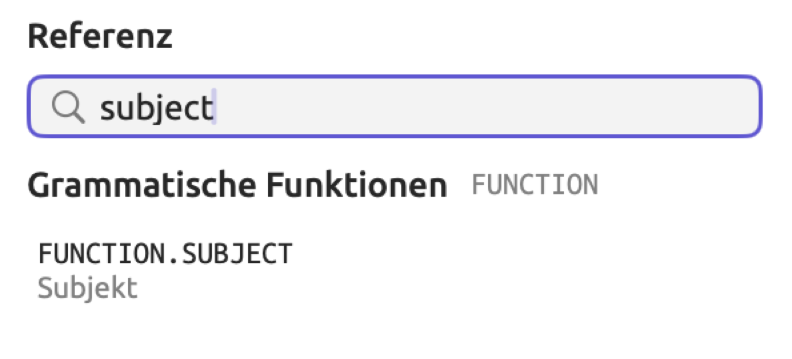
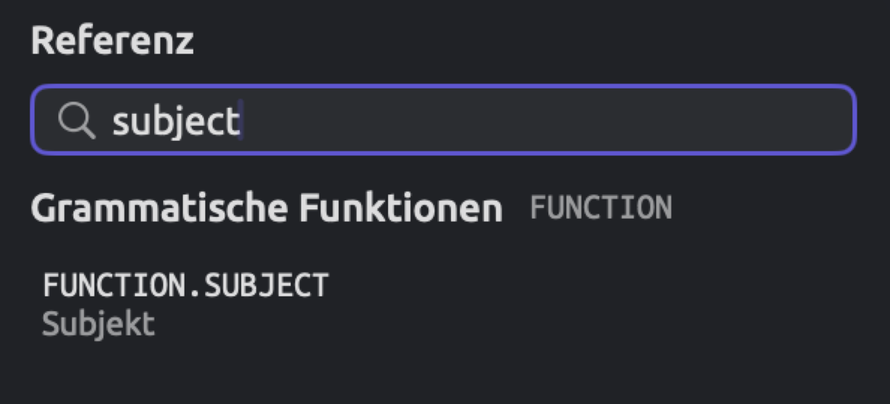
Befunde und Legende
Befunde
analyze muss eine Liste zurückgeben, deren Elemente Befunde mit den folgenden Feldern sind:
| Feld | Inhalt |
|---|---|
sentenceIndex | Der index des Satzes |
start | Die Position des ersten Tokens der Textstelle |
end | Die Position direkt nach dem letzten Token |
key | Einer der Schlüssel in der Legende |
note | Ein kurzer Text Ihrer Wahl; optional |
Im Beispiel The new targets were announced steht das erste Token an Position 0 und das letzte an Position 4; der Befund hat also start: 0 und end: 5. Die Zahl der Tokens ist deshalb immer end - start, hier 5.
Ein Befund muss innerhalb eines einzigen Satzes liegen. Befunde können sich überlappen, sodass ein Token mehrere Schlüssel tragen kann; die Leseansicht stellt dann alle ihre Stile an ihm dar.
Das Feld note ist für Abfragen gedacht. In einer Abfrage prüfen Sie es mit dem Feld Notiz (siehe Die Befunde verwenden weiter unten in diesem Kapitel).
Schlüssel und Legende
Für jeden Schlüssel, den Ihre Befunde verwenden, muss es eine Zeile in der Legende geben. Der Bereich Legende über dem Editor zeigt für jeden Schlüssel eine Zeile mit diesen Teilen:
- Schlüssel enthält den Schlüssel so, wie er im Skript steht.
- Beschriftung enthält den Namen, der in der Legende der Lens erscheint und in Abfragen verwendet wird. Anfangs ist die Beschriftung der Schlüssel selbst.
- Das Farbfeld legt die Farbe der Befunde mit diesem Schlüssel fest. Neue Schlüssel erhalten ihre Farben der Reihe nach aus einem Vorrat von acht Farben.
- Das Stilmenü legt fest, wie die Leseansicht die Befunde darstellt, mit den Optionen Hervorheben, Unterstreichen, Textfarbe und Fett. Bei neu hinzugekommenen Schlüsseln ist anfangs Hervorheben ausgewählt.
Während Sie schreiben, legt LemmaLoom für jeden Schlüssel, der im Skript in Anführungszeichen ausgeschrieben ist (key: '...'), eine Zeile in der Legende an, in der Reihenfolge, in der die Schlüssel im Skript vorkommen. Entfernen Sie einen Schlüssel aus dem Skript, wird seine Zeile aus der Legende gelöscht. Ändern Sie den Namen eines Schlüssels, wird seine Zeile gelöscht und durch eine neue ersetzt, die den geänderten Schlüssel als Beschriftung und die Standardfarbe hat. Vergeben Sie Farben und Beschriftungen deshalb erst, wenn die Namen der Schlüssel feststehen.
Beschriftung, Farbe und Stil jeder Zeile können Sie jederzeit ändern. Nach dem Sichern erscheinen Änderungen an den Zeilen der Legende in jedem Dokument, in dem die Lens aktiviert ist.
Schlüssel, die das Skript berechnet
Ein Schlüssel kann auch aus der Analyse selbst stammen. Ersetzen Sie die beiden if-Anweisungen des Analysators „Klimarollen“ samt den push-Zeilen darin durch die folgende Zeile, wird die grammatische Funktion zum Schlüssel:
findings.push({ sentenceIndex: sentence.index, start: index, end: index + 1, key: token.derived.function });
Ein Klima, das als Subjekt dient, erhält dann den Schlüssel subject, ein Klima, das Objekt ist, erhält object, ein Klima als Genitivattribut wie in die Feinde des Klimas erhält adjectival, und so weiter für jeden der zwölf Werte, die unter Abgeleitete Kategorien weiter oben in diesem Kapitel aufgeführt sind.
Solche Schlüssel gelangen über einen Testlauf in die Legende. Wenn Sie auf Sichern klicken, führt LemmaLoom das Skript auf einem Beispielsatz aus drei Wörtern aus (im Englischen Cats sleep soundly). Schlüssel, die dabei entstehen, werden automatisch hinzugefügt. Diese Zeilen behalten ihre Beschriftungen und Farben; ein Schlüssel, den das Skript nicht mehr erzeugt, wird beim nächsten Sichern entfernt.
Schlüssel, die der Testlauf nicht erzeugt, wie in diesem Beispiel, fügen Sie von Hand hinzu:
- Klicken Sie unter der Legende auf Schlüssel hinzufügen.
- Geben Sie den Schlüssel in das Feld Schlüssel der neuen Zeile ein, genau so, wie das Skript ihn erzeugt (etwa
adjectival). - Legen Sie Beschriftung, Farbe und Stil fest.
Zeilen, die Sie selbst hinzufügen, haben am Ende eine Schaltfläche mit einem Minuszeichen, mit der Sie sie wieder entfernen; solche Zeilen bleiben in der Legende, gleich was Ihr Skript enthält. Beim Sichern lässt LemmaLoom jede Zeile mit leerem Schlüssel weg, und von zwei Zeilen mit demselben Schlüssel behält es nur die erste.
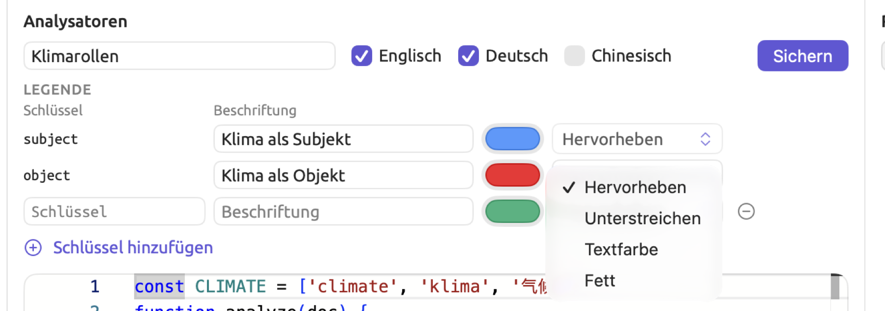
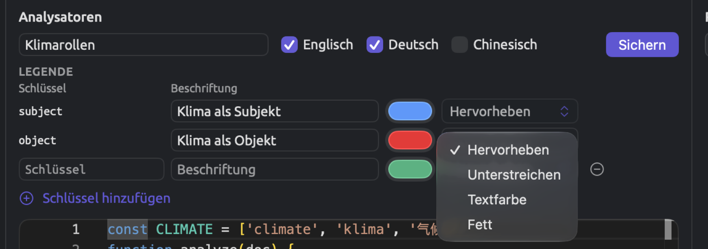
Für jeden Schlüssel in Ihrer Legende gibt es eine Konstante in KEY. Steht der Schlüssel subject in Ihrer Legende, können Sie key: KEY.SUBJECT schreiben. Schreiben Sie einen Schlüssel nur als KEY-Konstante, müssen Sie ihn mit Schlüssel hinzufügen eintragen. Einen Schlüssel, der mit einer Ziffer beginnt, wie 1st, oder Buchstaben außerhalb von a bis z enthält, wie über oder 主语, schreiben Sie in Anführungszeichen.
Unterstützte Sprachen
Mit den Markierungsfeldern Englisch, Deutsch und Chinesisch legen Sie fest, auf welchen Dokumenten der Analysator läuft. Das sind die drei Sprachen, die LemmaLoom indiziert. Nur Dokumente in einer ausgewählten Sprache bieten den Analysator im Lens-Menü an und führen ihn in den Dokumenteigenschaften auf. Mindestens eine Sprache muss ausgewählt sein.
Achten Sie darauf, dass Ihr Skript zu den gewählten Sprachen passt. „Klimarollen“ funktioniert in allen drei Sprachen, auch wenn „Klimadebatte“ nur Englisch und Deutsch braucht. Seine Liste enthält englische, deutsche und chinesische Lemmata, und es prüft token.derived.function, das in allen Sprachen dieselben Werte hat. Skripte, die token.tag oder token.dep prüfen, funktionieren nur in der Sprache ihrer Labels. Mit doc.language kann ein Skript mehrere Sprachen bedienen:
let subjectLabel = 'nsubj';
if (doc.language === 'de') {
subjectLabel = 'sb';
}
Auch bei den abgeleiteten Feldern unterscheiden sich die Analysen der einzelnen Sprachen im Detail. Testen Sie deshalb jede Sprache, die Sie auswählen. Im Englischen liefert do more for the climate einen Befund, weil die Analyse climate als Objekt der Präposition for einordnet. Im Deutschen erhält das Substantiv in der Präpositionalphrase für das Klima dagegen meist das Label nk (Teil einer Nominalphrase) und zählt damit als adjectival, sodass der Satz keinen Befund liefert.
Um eine andere Sprache zu testen, wählen Sie sie im Sprachmenü unter Ausprobieren und geben einen Satz in dieser Sprache ein. Im Menü stehen nur die Sprachen zur Wahl, die Sie ausgewählt haben; es führt sie mit ihren Kürzeln auf, en für Englisch, de für Deutsch und zh für Chinesisch.
Beim Sichern löscht LemmaLoom die Befunde des Analysators aus Dokumenten in Sprachen, deren Auswahl Sie aufgehoben haben, und führt den Analysator auf den Dokumenten der neu ausgewählten Sprachen aus.
Testen mit „Ausprobieren“
Ausprobieren führt das Skript, das gerade im Editor steht, auf einem Text aus, den Sie eingeben, gleich ob das Skript gesichert ist oder nicht. Verwenden Sie Ausprobieren beim Schreiben häufig, und nehmen Sie auch Sätze hinzu, die anders gebaut sind als Ihr erstes Beispiel, denn der Analysator muss mit jedem Satzbau in Ihren Dokumenten zurechtkommen.
- Geben Sie einen oder mehrere Sätze in das Feld unter Ausprobieren ein.
- Wählen Sie im Menü neben dem Feld die Sprache des Textes.
- Klicken Sie auf Ausführen.
LemmaLoom führt auf Ihrem Text dieselbe Grammatikanalyse aus wie auf Dokumenten, dann die eingebauten Analysatoren und danach Ihr Skript. Unter dem Feld erscheint Ihr Text mit den Befunden, annotiert in den Farben und Stilen der Legende. Vor dem ersten Lauf in einer Sprache kann es einige Sekunden dauern, bis die Grammatikanalyse für diese Sprache bereit ist. Ausführen ist deaktiviert, solange das Feld leer ist (Kein Text eingegeben), und während eines Laufs tritt eine sich drehende Fortschrittsanzeige an die Stelle der Schaltfläche.
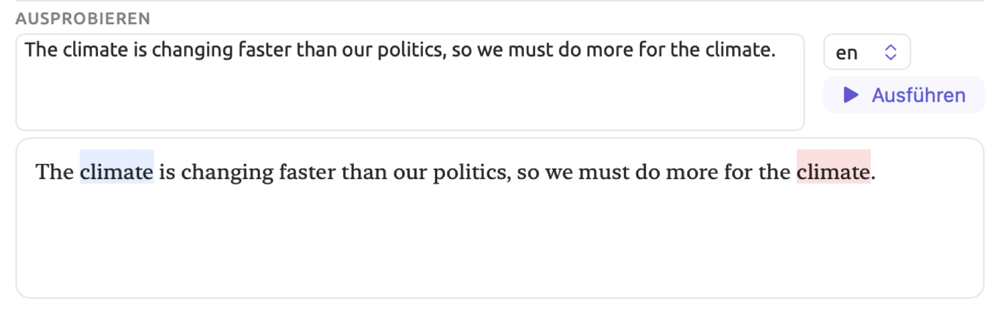
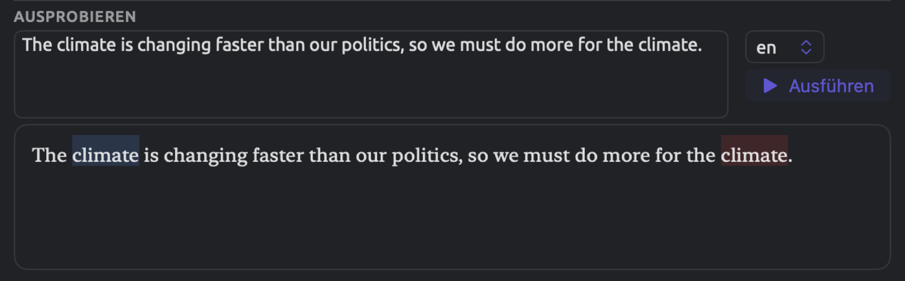
Unter dem annotierten Text zeigt eine kleine Konsole alles, was das Skript mit console.log ausgegeben hat, eine Zeile pro Aufruf, jede mit › am Anfang. Findet das Skript nichts, zeigt die Konsole 0 Befunde. Um zu sehen, wie die Analyse einen bestimmten Satz auffasst, können Sie die Werte ausgeben. Diese Zeile gibt innerhalb der Schleife über die Sätze jedes Token mit seiner Relation aus:
console.log(sentence.tokens.map((token) => token.text + '/' + token.dep));
Für The new targets were announced last year. erzeugt sie ["The/det","new/amod","targets/nsubjpass","were/auxpass","announced/ROOT","last/amod","year/npadvmod","./punct"].
Der Testtext bleibt im Feld, solange das Fenster geöffnet ist, auch wenn Sie zu einem anderen Analysator wechseln; so können Sie mehrere Analysatoren auf demselben Text ausführen.
Wenn Fehler auftreten
Schlägt die Ausführung fehl, hält LemmaLoom Ihr Skript an, zeigt unter dem Editor eine Fehlermeldung in Rot und unterstreicht im Editor die fehlerhafte Zeile, wenn der Fehler zu einer bestimmten Zeile gehört. Bei Fehlern in Ihren Befunden unterstreicht der Editor Zeile 1.
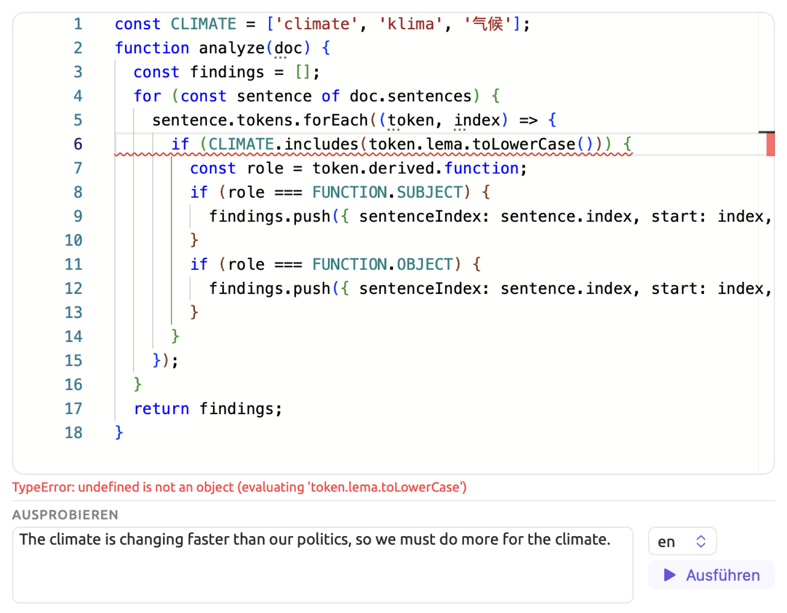
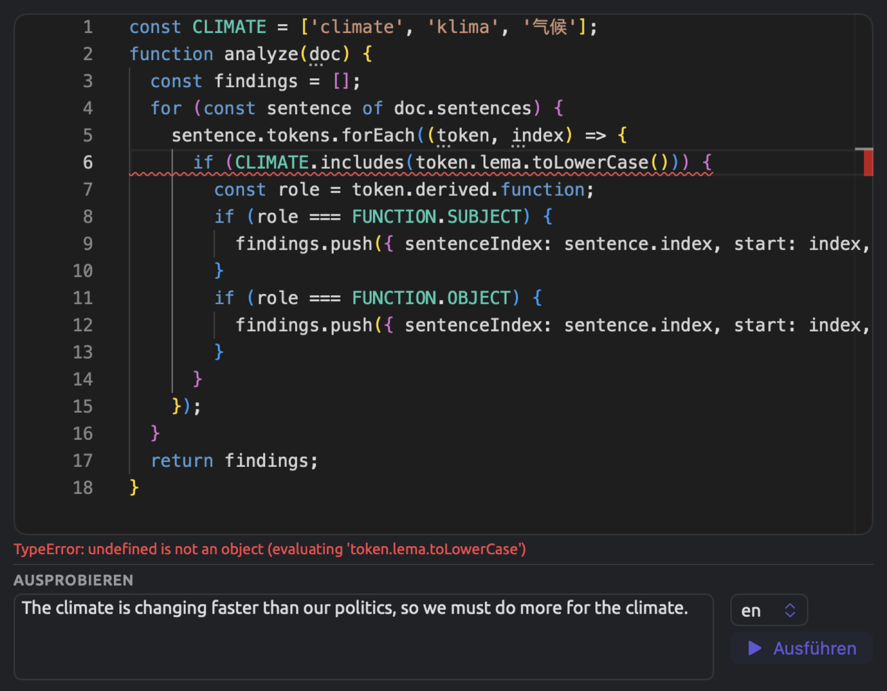
| Meldung | Bedeutung |
|---|---|
| The script must define a function named analyze(doc). | Es gibt keine Funktion namens analyze, vielleicht weil ihr Name falsch geschrieben ist. |
| analyze(doc) must return an array of findings. | Die Funktion gibt nichts zurück oder etwas anderes als eine Liste. Prüfen Sie die Zeile mit return. |
| Finding 3 must have sentenceIndex, start, end, and key. | Einem Befund fehlt eines der vier Felder, einer ihrer Namen ist falsch geschrieben, oder ein Wert hat den falschen Typ (eine Position, die keine Zahl ist, oder ein Schlüssel, der kein Text ist). Auch eine falsch geschriebene Konstante wie KEY.SUBJCT hat keinen Wert und führt deshalb zu dieser Meldung. Befunde werden ab 0 gezählt, gemeint ist hier also der vierte. |
| Finding 3: sentenceIndex 12 is out of range. | Es gibt keinen Satz mit dieser Nummer. |
| Finding 3: token range 4..4 is out of range for sentence 0. | end ist nicht größer als start, start liegt unter 0, oder end liegt hinter dem Ende des Satzes. |
| Finding 3: key „objekt“ is not in the legend. | Der Schlüssel hat keine Zeile in der Legende. Korrigieren Sie das Skript, oder tragen Sie den Schlüssel mit Schlüssel hinzufügen ein. |
| Eine Meldung, die mit TypeError, ReferenceError oder SyntaxError beginnt | Ein Fehler im JavaScript selbst. Der Editor unterstreicht die Zeile. |
Ein TypeError weist oft auf ein falsch geschriebenes Feld hin. Angenommen, in Zeile 6 von „Klimarollen“ stünde token.lema.toLowerCase() statt token.lemma.toLowerCase(). Dann bräche die Ausführung in Zeile 6 mit einem TypeError ab, weil token.lema nicht existiert und sich deshalb nicht in Kleinbuchstaben umwandeln lässt.
Ein Skript, das in einer Endlosschleife festhängt, hält nicht von selbst an. Unter Ausprobieren steht dann dauerhaft die sich drehende Anzeige an der Stelle von Ausführen. Auch Sichern führt das Skript aus und kann deshalb dasselbe Problem auslösen. Wählen Sie in diesem Fall das ganze Skript mit ⌘A aus und kopieren Sie es mit ⌘C, denn beim Beenden gehen nicht gesicherte Änderungen verloren. Beenden Sie dann LemmaLoom (⌘Q), öffnen Sie es wieder und setzen Sie Ihr Skript erneut ein. Eine Endlosschleife ist meist eine while-Schleife, deren Bedingung nie falsch wird. Enthält das Skript eine andere Schleife als for … of oder forEach über eine Liste, testen Sie es an einem kurzen Text, bevor Sie sichern.
Haltepunkte und schrittweise Ausführung
Entspricht der annotierte Text nicht Ihren Erwartungen, können Sie die Ausführung mitten in einem Testlauf anhalten und den aktuellen Zustand der Variablen des Skripts ansehen.
- Klicken Sie im Editor in den Rand links neben einer Zeilennummer oder auf die Nummer selbst. Ein roter Punkt zeigt, dass die Zeile einen Haltepunkt hat. Ein weiterer Klick entfernt ihn.
- Klicken Sie unter Ausprobieren auf Ausführen.
Das Skript hält unmittelbar vor der Zeile mit dem Haltepunkt an. Die Zeile wird hervorgehoben, und ein Feld unter dem Testtext zeigt ihre Nummer, etwa ● L7, zusammen mit den aktuellen Werten der Variablen des Skripts. Wenn Sie den Mauszeiger im Skripteditor auf eine dieser Variablen halten, sehen Sie ebenfalls ihren Wert.
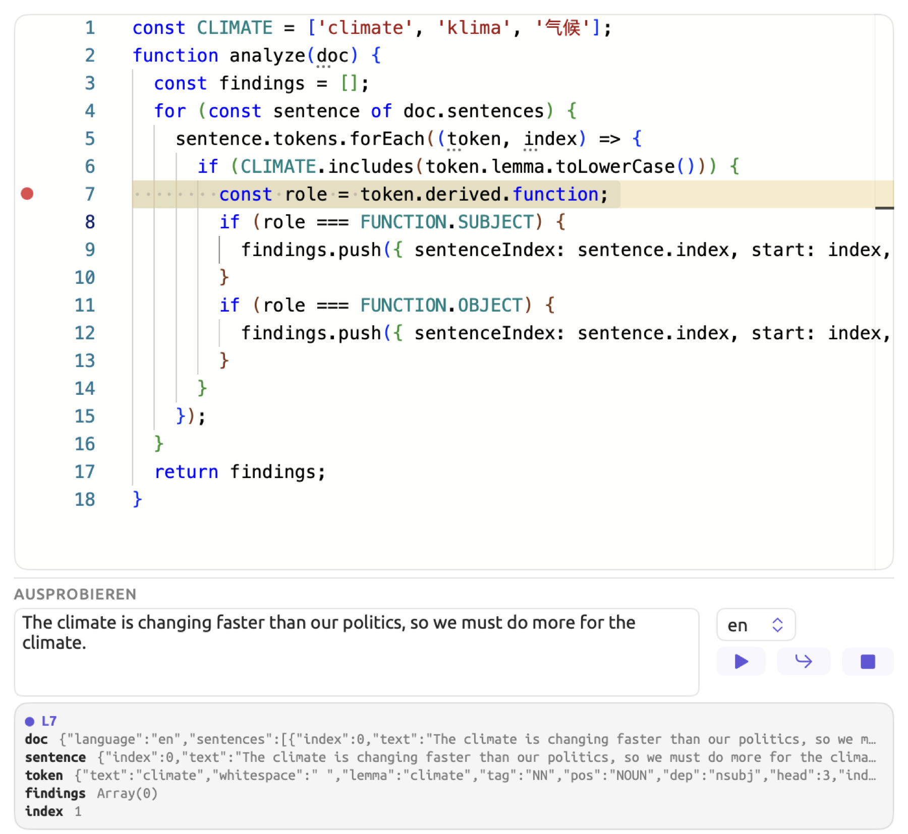
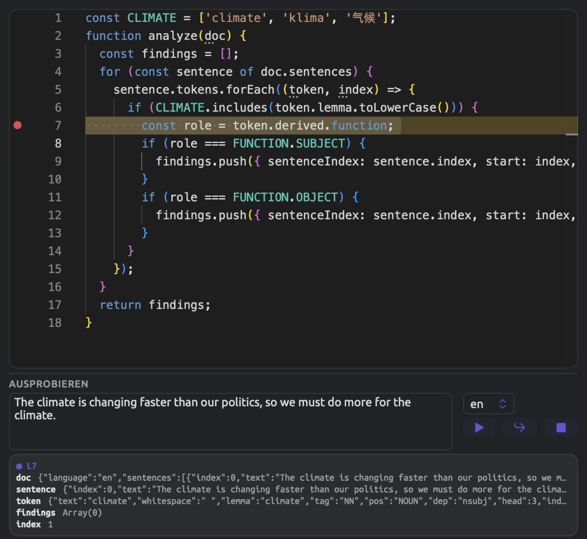
An die Stelle von Ausführen treten drei Schaltflächen:
- Die Wiedergabetaste setzt den Lauf bis zum nächsten Haltepunkt oder bis zum Ende des Laufs fort.
- Der gebogene Pfeil geht zur nächsten Zeile weiter, die eine Anweisung beginnt. Dabei geht er auch in Schleifen hinein und in Funktionen, die an
forEachübergeben werden. Wenn Sie „Klimarollen“ schrittweise ausführen, gelangen Sie also der Reihe nach zu jedem Token. - Das Quadrat beendet den Lauf vorzeitig.
LemmaLoom zeigt nur die Variablen doc, sentence, token, findings, finding, marker, span, clause, i und index, und nur, wenn sie an dieser Stelle des Skripts existieren. Die Beispiele in diesem Kapitel verwenden diese Namen, wo immer es geht. Andere Variablen, etwa role in „Klimarollen“, können Sie mit console.log ausgeben. Lange Werte werden gekürzt; von Listen erscheint nur ihre Länge (Array(3)), Texte werden nach den ersten 80 Zeichen abgeschnitten und Objekte nach 120 Zeichen.
Mit „Klimarollen“ und dem weiter oben in diesem Kapitel vorgestellten Testsatz hält ein Haltepunkt in Zeile 7 (const role = …) die Ausführung beim ersten climate an; dort ist index gleich 1 und findings gleich Array(0). Ein Klick auf die Wiedergabetaste hält die Ausführung beim zweiten climate an, wo index gleich 16 und findings gleich Array(1) ist, denn dazwischen ist der Befund für das erste climate hinzugekommen.
Ein Haltepunkt hält ein Skript nur in einer Zeile an, die eine Anweisung beginnt. Ein Haltepunkt in Zeilen mit schließenden Klammern wie } oder }); in „Klimarollen“, in Zeilen, die mit else beginnen, oder in der Fortsetzung einer vorigen Anweisung wird deshalb übersprungen. Bei manchen Skriptstrukturen kann LemmaLoom dem Skript nur von Haltepunkt zu Haltepunkt folgen, und bei einigen wenigen führt es das Skript ganz aus, ohne an einem Haltepunkt anzuhalten. Haltepunkte wirken nur unter Ausprobieren.
Sichern, ändern und löschen
Einen Analysator sichern
Um den Analysator zu sichern, klicken Sie oben in der mittleren Spalte auf Sichern oder drücken den Zeilenschalter, während Sie Name oder ein Feld Beschriftung bearbeiten. Sichern ist deaktiviert, solange Name leer ist (Name ist leer) oder keine Sprache ausgewählt ist (Keine Sprache gewählt).
Bevor LemmaLoom den Analysator sichert, prüft es sein Skript. Zuerst ermittelt es die Schlüssel der Legende, dann führt es Ihr Skript in jeder ausgewählten Sprache auf einem Beispielsatz aus drei Wörtern aus (Cats sleep soundly, Katzen schlafen gern und 猫 喜欢 睡觉). Diese Beispielsätze ergeben leere Ergebnisse für Phrasen, Nominalgruppen, morphologische Merkmale und die eingebauten Analysatoren; die Prüfung erkennt deshalb auch Probleme, die beim Verarbeiten leerer Listen auftreten. Hat Ihr Skript einen Fehler, meldet LemmaLoom ihn unter dem Skripteditor (siehe Wenn Fehler auftreten weiter oben in diesem Kapitel). Zwei weitere Meldungen erscheinen nur beim Sichern. The script is empty. bedeutet, dass im Editor kein Skript steht, und No keys found in the script., dass die Legende leer ist.
Danach wendet LemmaLoom das geprüfte Skript auf alle Ihre Dokumente in den ausgewählten Sprachen an. Fortschrittsringe erscheinen in der Seitenleiste und unter Fenster ▸ Aktivität (⌥⌘0). Wie lange das dauert, hängt davon ab, wie viele Dokumente Sie haben und wie leistungsfähig Ihr Mac ist.
Einen Analysator ändern
Wählen Sie einen Analysator in der Liste aus, ändern Sie ihn und klicken Sie auf Sichern. Was dann geschieht, hängt von der Art der Änderung ab:
- Haben Sie den Namen, eine Beschriftung, eine Farbe oder einen Stil geändert, wirkt sich die Änderung sofort überall aus, wo die Lens des Analysators aktiviert ist.
- Haben Sie das Skript selbst, die Sprachen oder die Schlüssel geändert, führt LemmaLoom den Analysator auf allen Dokumenten in seinen Sprachen erneut aus, auch in einer Sprache, die Sie gerade erst ausgewählt haben. Bis ein Dokument verarbeitet ist, zeigt die Zeile des Analysators in den Dokumenteigenschaften dieses Dokuments Veraltet.
Das Anlegen, Ändern und Löschen eines Analysators sind Schritte im Widerrufverlauf des Fensters „Analysatoren“. Ist dieses Fenster aktiv, stellt zum Beispiel Bearbeiten ▸ Analysator bearbeiten widerrufen die vorige Fassung des Analysators wieder her. Die mittlere Spalte zeigt weiterhin, was Sie gesichert hatten, bis Sie den Analysator erneut in der Liste auswählen. Sichern Sie vorher, wird die neuere Fassung erneut gesichert. Mehr zum Widerrufen in den einzelnen Fenstern finden Sie unter Zu welchem Fenster ein Schritt gehört in Kapitel 23, Widerrufen und Wiederholen.
Einen Analysator löschen
Um einen Analysator zu löschen, klicken Sie ihn in der Liste mit der rechten Maustaste an und wählen Analysator löschen. Sie können den Analysator auch zuerst auswählen und dann Bearbeiten ▸ Analysator löschen (⌘⌫) wählen. Dieser Kurzbefehl wirkt, solange die Liste den Fokus hat, wie nach der Auswahl eines Analysators. LemmaLoom löscht den Analysator sofort.
Da alle Projekte die Analysatoren gemeinsam nutzen, verschwindet ein gelöschter Analysator sofort aus allen Projekten. Seine Lens wird in allen geöffneten Dokumenten deaktiviert, und LemmaLoom entfernt seine Befunde aus allen Dokumenten. Bearbeiten ▸ Analysator löschen widerrufen (⌘Z) stellt ihn wieder her und führt ihn erneut aus. Soll ein Analysator nur aus bestimmten Dokumenten verschwinden, deaktivieren Sie ihn für diese Dokumente (siehe Analysatoren für einzelne Dokumente weiter unten in diesem Kapitel).
Wann Analysatoren ausgeführt werden
Ein eigener Analysator läuft am Ende der Indizierung auf Ihren Dokumenten, nach der Grammatikanalyse des jeweiligen Dokuments und den drei eingebauten Analysatoren. Die eigenen Analysatoren für die Sprache des Dokuments laufen nacheinander, sofern sie für das Dokument aktiviert sind. Ihre Befunde werden mit dem Dokument gespeichert; die Lens, Automatisch kodieren… und Abfragen greifen darauf zu.
Ihre Analysatoren laufen auf einem Dokument:
- beim ersten Indizieren, nach dem Import in das Projekt oder über Jetzt indizieren;
- bei jedem erneuten Indizieren, etwa nach Änderungen am Text oder an der Spracheinstellung des Dokuments;
- nach dem Sichern eines neuen Analysators oder einer Änderung an Skript, ausgewählten Sprachen oder Schlüsseln eines Analysators;
- über Ausführen in den Dokumenteigenschaften des Dokuments.
Ändern Sie einen vorhandenen Analysator, verwendet LemmaLoom in der Regel die bereits vorliegende Grammatikanalyse Ihrer Dokumente und führt nur die Analysatoren erneut aus, statt alles von vorn zu berechnen. Trotzdem verarbeitet ein Analysator jedes Dokument in seinen Sprachen. Ein ineffizient geschriebenes Skript bremst daher die Verarbeitung aller Dokumente. Gerät das Skript in eine Endlosschleife, läuft es sogar so lange weiter, bis Sie LemmaLoom beenden. Korrigieren oder löschen Sie in diesem Fall den betreffenden Analysator unter Fenster ▸ Analysatoren, bevor Sie LemmaLoom beenden und wieder öffnen.
Bei der Ausführung auf einem bestimmten Dokument kann ein Fehler auftreten, etwa weil das Dokument eine Wortfolge oder einen Satzbau enthält, die in Ihren Testsätzen nicht vorkamen. LemmaLoom verwirft dann die Befunde des Analysators für dieses Dokument und kennzeichnet den Analysator in den Dokumenteigenschaften als Nicht ausgeführt oder Veraltet. Dort können Sie auf Ausführen klicken, um es erneut zu versuchen. Scheitert das Skript wieder, kennzeichnet LemmaLoom den Analysator in den Dokumenteigenschaften als Fehlgeschlagen und zeigt die Fehlermeldung, wenn Sie den Mauszeiger darauf bewegen. Um den Fehler genau einzugrenzen, kopieren Sie verdächtige Sätze in Ausprobieren und führen das Skript dort aus.
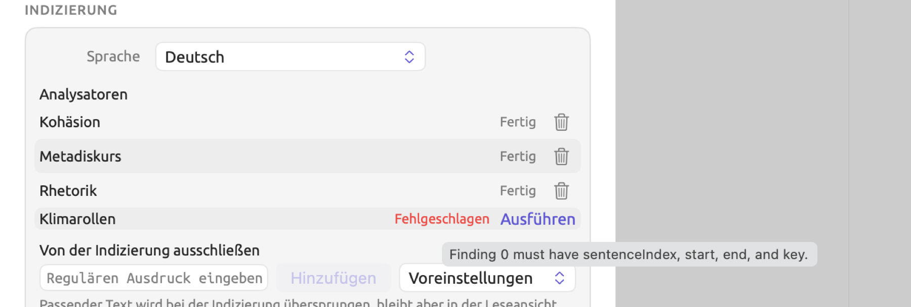
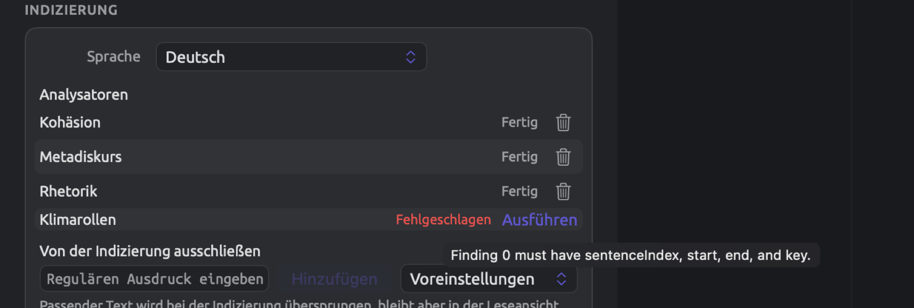
Analysatoren für einzelne Dokumente
Ein Analysator läuft auf jedem Dokument in seinen Sprachen, sofern er für das Dokument nicht deaktiviert ist. Einen Analysator, der nicht zu einem Dokument passt, können Sie beim Import des Dokuments oder jederzeit danach deaktivieren. Wie Sie die Analysatoren für ein Dokument wählen, beschreibt Analysatoren für ein Dokument wählen in Kapitel 21, Analyse und Indizierung.
Beim Import eines Dokuments enthält der Dialog Dokument importieren (bei Webseiten Aus dem Web importieren) die Liste Analysatoren, die zuerst die eingebauten Analysatoren und danach Ihre eigenen in alphabetischer Reihenfolge zeigt. Jeder Eintrag hat ein Markierungsfeld; heben Sie seine Auswahl auf, damit der betreffende Analysator nicht auf dem Dokument läuft. Steht Sprache auf Automatisch, erscheinen alle Analysatoren, bei einer bestimmten Sprache nur die für diese Sprache. Ist Für die Grammatikanalyse indizieren nicht ausgewählt, ist die Liste deaktiviert. Mehr dazu finden Sie unter Analysatoren und Indizierung in Kapitel 4, Material importieren.
Für ein Dokument, das bereits in Ihrem Projekt ist, steht die Liste Analysatoren in den Dokumenteigenschaften:
- Klicken Sie in der Seitenleiste mit der rechten Maustaste auf das Dokument und wählen Sie Eigenschaften.
- Suchen Sie im Abschnitt Indizierung die Liste Analysatoren.
Jeder Analysator, der für die Sprache des Dokuments verfügbar ist, hat dort eine eigene Zeile mit seinem Status (Fertig, Veraltet, Nicht ausgeführt, Läuft oder Fehlgeschlagen).
- Um die Befunde eines Analysators aus einem Dokument zu entfernen, sodass er dort nicht mehr läuft, klicken Sie auf seine Schaltfläche mit dem Papierkorb, Ausgabe entfernen. Diese Schaltfläche erscheint, sobald der Analysator auf dem Dokument gelaufen ist.
- Um einen Analysator auszuführen, dessen Status Nicht ausgeführt oder Veraltet ist oder der aus dem Dokument entfernt wurde, klicken Sie auf Ausführen; ein entfernter Analysator wird dadurch für das Dokument wieder aktiviert.
Ausführen ist deaktiviert, solange das Dokument noch nicht indiziert ist (Noch nicht indiziert) oder die Indizierung für das Dokument ausgeschaltet ist (Indizierung ist aus). Entfernen und Ausführen wirken beide sofort.
Das Entfernen eines Analysators und das Ausführen eines entfernten Analysators sind Schritte im Widerrufverlauf des Hauptfensters, und Bearbeiten ▸ Ausgabe entfernen widerrufen stellt den Analysator wieder her und führt ihn erneut aus.
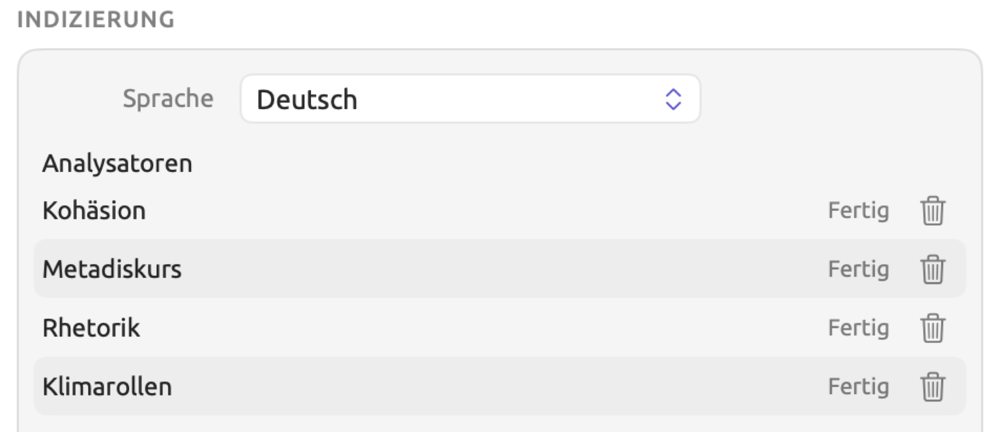
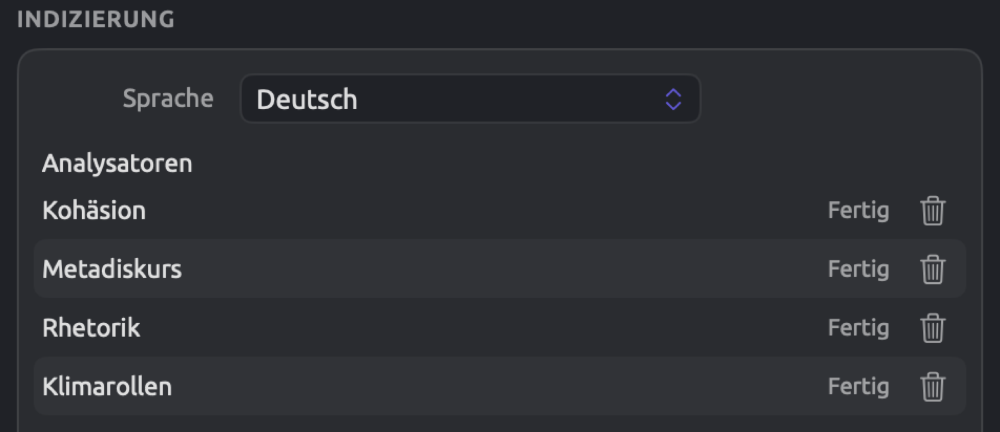
Ein Analysator, den Sie aus einem Dokument entfernt haben, erscheint nicht mehr im Lens-Menü dieses Dokuments, und Automatisch kodieren… sowie Abfragen mit diesem Analysator überspringen das Dokument. Ändern Sie später einen Analysator, der für ein Dokument deaktiviert ist, bleibt er dort deaktiviert; die neue Fassung läuft also nur auf den Dokumenten, für die er aktiviert ist.
Die Befunde verwenden
In der Leseansicht
Über das Lens-Menü können Sie jeden Analysator einzeln aktivieren und deaktivieren, um die Annotationen seiner Befunde direkt in der Leseansicht zu sehen. Um die Annotationen eines Analysators zu aktivieren, öffnen Sie das Lens-Menü am rechten Rand der Titelleiste; dort sind Ihre Analysatoren in einer Gruppe zusammengefasst. Die Lens zeigt die Annotationen, ihre Legende die Beschriftungen. Analysatoren deaktivieren deaktiviert alle Analysator-Lenses auf einmal. Wie Sie einzelne Schlüssel aktivieren und deaktivieren und mit Nur die Sätze anzeigen, die eine Lens annotiert nur die annotierten Sätze anzeigen, erfahren Sie unter Analysator-Lenses in Kapitel 6, Lenses.
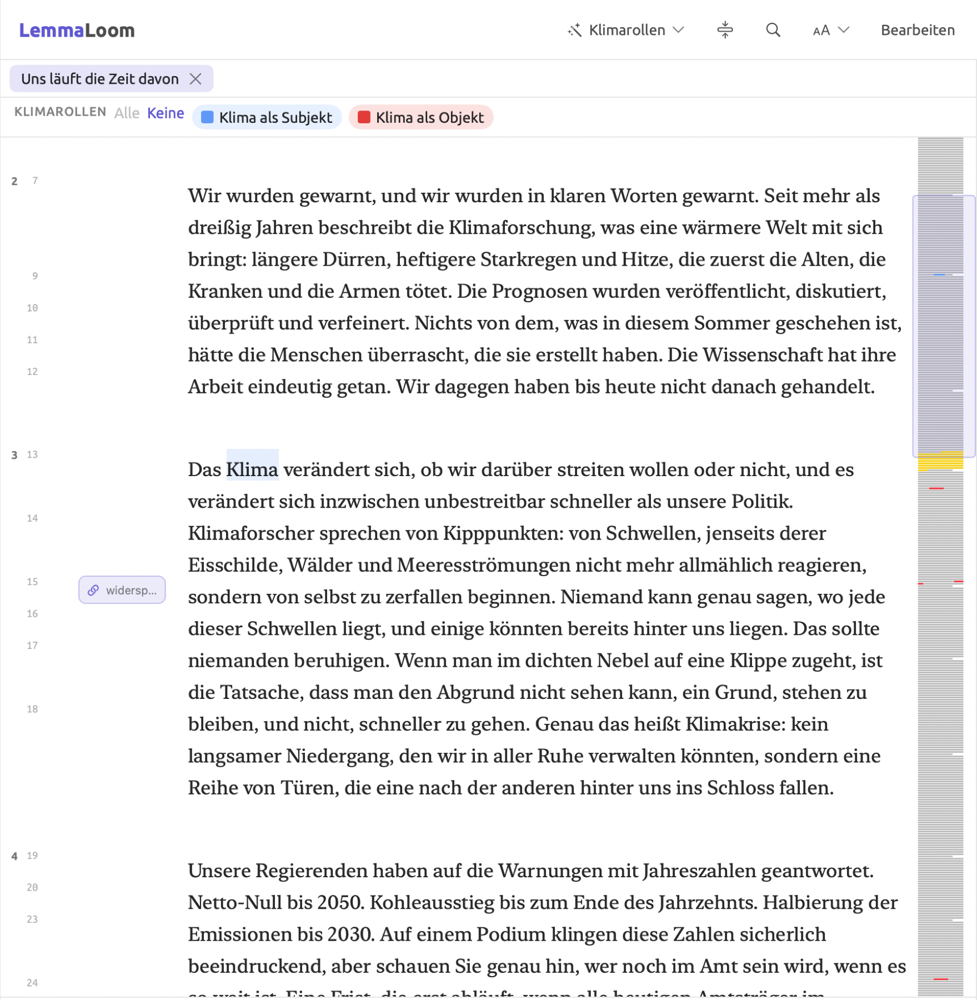
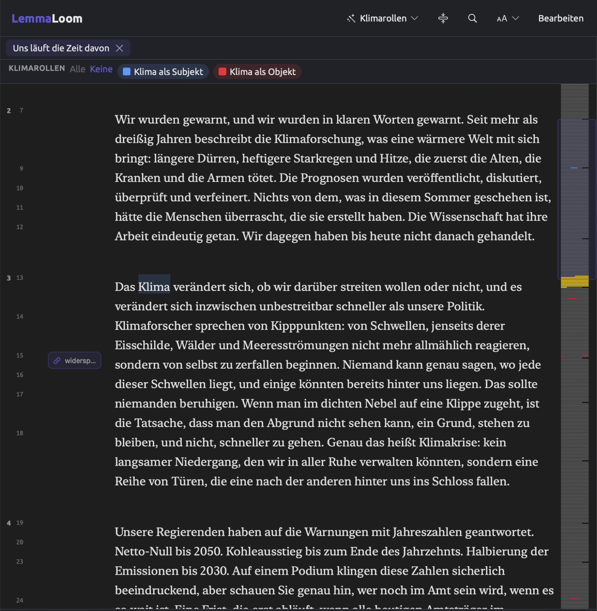
Die Befunde kodieren
Ist die Lens des Analysators aktiviert, kodiert Dokument ▸ Automatisch kodieren… (⇧⌘A) die Befunde des Analysators, und zwar im geöffneten Dokument, in einem Dokumentset oder im ganzen Projekt. Jeder Schlüssel der Befunde wird zu einer Zeile im Dialog Automatisch kodieren, benannt nach seiner Beschriftung. Jede dieser Zeilen können Sie einem vorhandenen Code zuordnen (etwa die Zeile „Klima als Objekt“ dem Code „Verantwortung“ in „Klimadebatte“) oder in einen neuen Code umwandeln (etwa zwei neue Codes aus den beiden Zeilen von „Klimarollen“). Bei einem Set oder Projekt tut LemmaLoom dasselbe in allen enthaltenen Dokumenten, die in einer Sprache des Analysators vorliegen, indiziert sind und für die der Analysator aktiviert ist. Bedenken Sie, dass jeder Fehler der Grammatikanalyse ebenfalls zu einer Kodierung wird. Mehr zu diesem Dialog finden Sie in Kapitel 7, Kodieren.
In Abfragen
Eine Abfrage nach Analyse · Befunde durchsucht, was die Analysatoren gefunden haben, sowohl die mitgelieferten als auch Ihre eigenen. Drei Felder beziehen sich eigens auf Befunde. Analysator prüft, welcher Analysator den Befund gefunden hat, Befund prüft den Schlüssel, unter dem der Befund verzeichnet ist (aufgeführt unter seiner Beschriftung), und Notiz prüft die Notiz des Befunds. Daneben gelten die übrigen Prüfungen einer Abfrage, etwa die Codes eines Befunds und die Attribute seines Dokuments. Abfragen nach Bibliothek · Analysatoren listen die Analysatoren selbst auf und können ihre Felder Name, Sprachen und Legendenschlüssel prüfen (siehe Was gesucht wird in Kapitel 15, Eine Abfrage erstellen).
In „Klimadebatte“ hat jedes Dokument ein Attribut „Haltung“ mit einem der Werte „Aktivismus“, „Skepsis“ oder „Neutral“. Zählen Sie die Befunde des Analysators „Klimarollen“ nach Schlüssel und nach „Haltung“, sollten sich deshalb etwaige Unterschiede darin zeigen, wie Aktivisten und Skeptiker das Thema Klima darstellen. Bei Ihrem eigenen Material gruppieren Sie nach dem Attribut, das Ihre Dokumente aufteilt.
So zählen Sie die Befunde eines Analysators nach Gruppen:
- Öffnen Sie die Ansicht Abfragen des Projekts.
- Wählen Sie unter Suchen den Eintrag Analyse · Befunde.
- Klicken Sie in der Bedingung Wobei auf Hinzufügen und wählen Sie Regel hinzufügen.
- Wählen Sie im Feldmenü der neuen Regel im Abschnitt Befund den Eintrag Analysator.
- Lassen Sie den Vergleich auf ist eines von und wählen Sie den Analysator als Wert der Regel.
- Wählen Sie unter Anzeigen den Eintrag Anzahl.
- Klicken Sie auf Gruppieren nach und wählen Sie im Feldmenü der neuen Zeile Befund.
- Klicken Sie erneut auf Gruppieren nach und wählen Sie im Feldmenü der zweiten Zeile das Attribut, etwa Attribut ▸ Haltung.
- Wählen Sie im Menü, das Treffer zeigt, den Eintrag Pro 10.000 Wörter.
Für „Klimarollen“ in „Klimadebatte“ erhalten Sie eine Tabelle mit den Subjekten und Objekten für jeden Wert von „Haltung“. Da die Gruppen unterschiedlich viel Text umfassen, ist das Ergebnis eigentlich eine Tabelle von Raten. Die Rate gibt an, wie viele Befunde in einer Gruppe auf 10.000 Wörter Text in den Dokumenten dieser Gruppe kommen (siehe Maße in Kapitel 16, Abfrageergebnisse und Statistik). Enthielten die Dokumente der Aktivisten zum Beispiel 4.000 Wörter und 3 Befunde für „Klima als Objekt“ (runde Zahlen, nur als Beispiel), wäre die Rate .
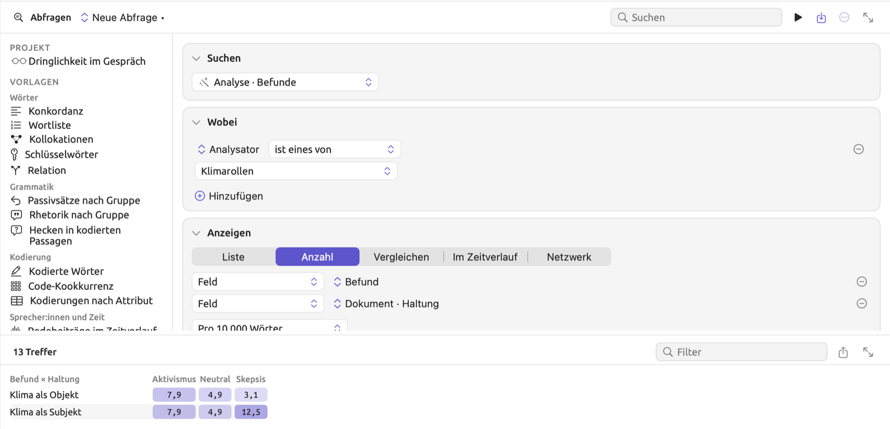
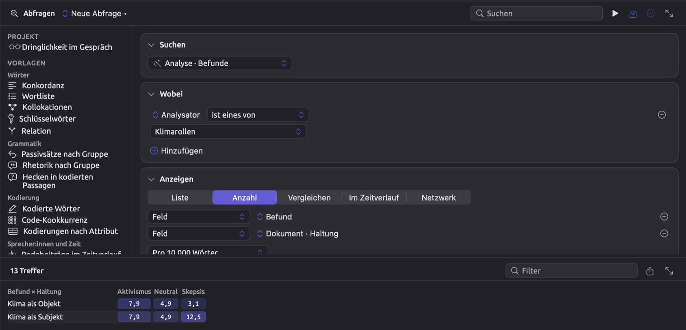
Wie in Gruppen vergleichen in Kapitel 16, Abfrageergebnisse und Statistik beschrieben, wählen Sie für einen Test auf signifikante Unterschiede zwischen den Gruppen unter Anzeigen den Eintrag Vergleichen, löschen dann die Zeile Befund aus Gruppieren nach, sodass nur „Haltung“ bleibt, und fügen schließlich eine Regel Befund ist eines von „Klima als Objekt“ hinzu. Die drei neutralen Dokumente, „Hitzebericht 2024“, „Streit um die CO2-Steuer“ und „Radiodebatte“, nehmen als eigene Gruppe am Vergleich teil.
In Archiven
Ein LemmaLoom-Archiv (.llz) enthält die Analysatoren, deren Befunde mit den Dokumenten im Archiv gespeichert sind, zusammen mit diesen Befunden. Außerdem enthält ein Archiv alle Analysatoren, die seine gesicherten Abfragen verwenden oder in die sie umgewandelt wurden. Beim Import eines Archivs wird ein Analysator, der denselben Namen trägt wie ein vorhandener Analysator in Ihrer Bibliothek, sonst aber nichts mit ihm zu tun hat, neben diesem importiert. Mehr dazu finden Sie in Kapitel 22, Austausch und Export.
Analysatoren aus Abfragen
Um eine Abfrage als Analysator zu sichern, wählen Sie im Menü Sichern der Abfrage Als Analysator sichern …. Die Abfrage muss Wörter, Mustertreffer, Sätze, Phrasen oder Nominalgruppen suchen und nur deren Wörter und Grammatik prüfen; andernfalls lässt sie sich nicht in einen Analysator umwandeln. Der neue Analysator erscheint zusammen mit den anderen unter Fenster ▸ Analysatoren; wie bei jedem anderen Analysator können Sie also sein Skript ansehen, es mit Ausprobieren testen und es direkt ändern. Seine Schlüssel sind entweder die Kategorien Ihrer Abfrage oder, wenn die Abfrage keine Kategorien hat, ein einzelner Schlüssel hit mit der Beschriftung Übereinstimmung. Sie erscheinen als Zeilen der Legende mit einem Feld Schlüssel und einer Schaltfläche mit Minuszeichen, wie Zeilen, die Sie mit Schlüssel hinzufügen anlegen.
Der erzeugte Analysator ist mit der gesicherten Abfrage, aus der er stammt, verknüpft. Wird die Abfrage mit Änderungen erneut gesichert, erscheint in der Liste neben dem Namen des Analysators Veraltet. So aktualisieren Sie ihn:
- Klicken Sie in der Liste auf den Analysator.
- Klicken Sie auf Analysator aktualisieren links neben Sichern.
Wenn LemmaLoom aus der gesicherten Abfrage ein neues Skript schreibt, behält es Name und Sprachen des Analysators bei, ersetzt aber Skript und Legende; Änderungen an Beschriftungen, Farben und Stilen des Analysators werden also überschrieben. Ob das neue Skript findet, was die Abfrage findet, prüft LemmaLoom nur bei Als Analysator sichern …. Enthält das neu geschriebene Skript Fehler, erscheinen sie unter dem Editor. Lässt sich die gesicherte Abfrage in ihrem aktuellen Zustand nicht in einen Analysator umwandeln, ist Analysator aktualisieren deaktiviert, mit einer Erklärung des Grundes; Bearbeiten ▸ Analysator aktualisieren widerrufen stellt den Zustand des Analysators vor der Aktualisierung wieder her.
Die Verknüpfung zwischen gesicherter Abfrage und Analysator endet, sobald Sie das Skript bearbeiten und sichern. Der Analysator zählt dann als einer Ihrer eigenen. Ändern Sie nur Name, Sprachen oder Legende, bleibt die Verknüpfung bestehen. Weitere Möglichkeiten im Umgang mit Analysatoren aus Abfragen finden Sie unter Einen Analysator auf dem Stand seiner Abfrage halten in Kapitel 18, Abfrageergebnisse nutzen.